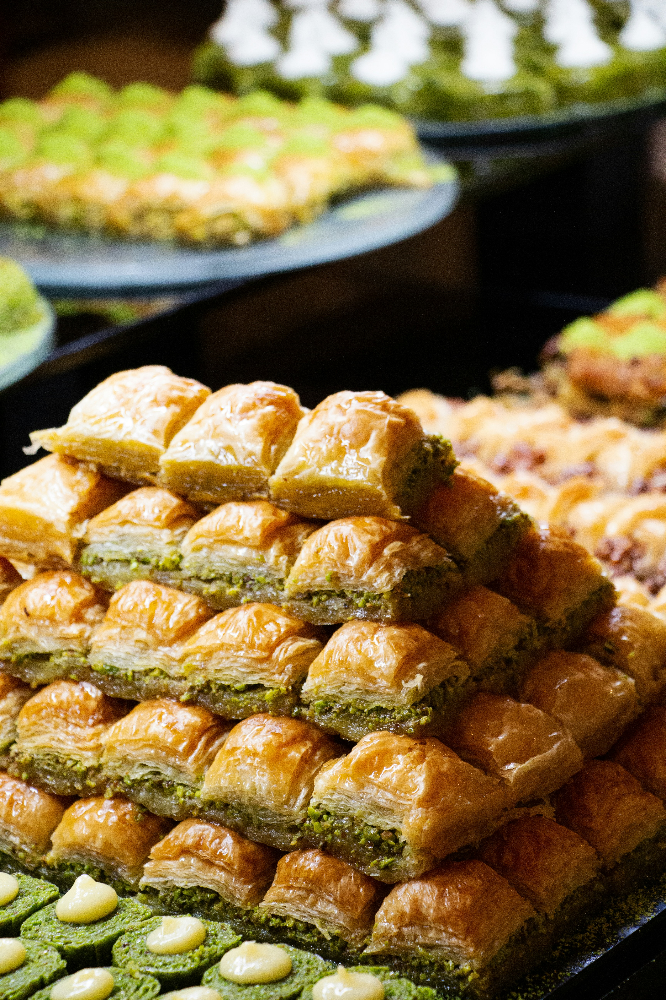

A sweet, nutty, and buttery dessert made from layers of flaky phyllo pastry and ground walnuts, soaked in a warm sugar syrup. This simplified version keeps the authentic Bosnian flavor with minimal effort — golden, crisp, and irresistibly syrupy.
Butter a baking pan. Layer 3 sheets of phyllo, brushing each layer with butter. Sprinkle nuts, repeat.
Cut into diamonds or squares before baking.
Bake for 30-35 minutes until golden brown.
Boil sugar and water for 5-7 minutes until slightly thick.
Pour syrup over hot baklava and let it soak before serving.